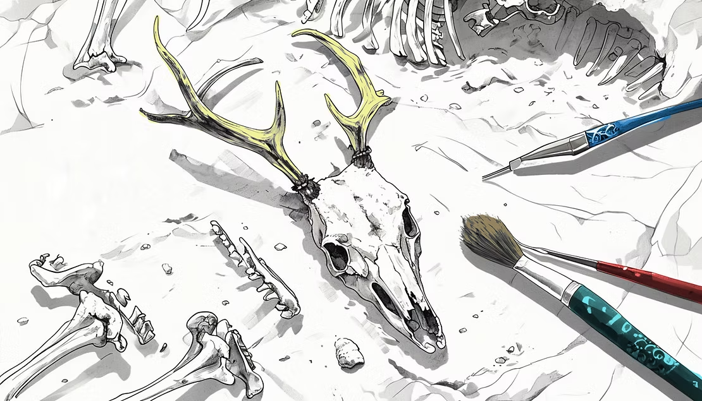

What Do Ancient Bones Tell Us About What People Ate for Dinner?
Have you ever wondered what was on the menu 6,000 years ago? No menus survived, no cookbooks, no food diaries, but the bones did.
This is the world of zooarchaeology: the study of animal remains found at archaeological sites. Zooarchaeology for beginners can sound complicated, but the basic idea is wonderfully simple, by looking at which animal bones are present at a site, how old the animals were when they died, and whether the bones show cut marks or burning signs, a zooarchaeologist can reconstruct an entire ancient dinner table. Think of it as food history for kids that goes back thousands of years, told entirely through bones.
The Ancient Diet of the Chalcolithic Period
Take the Chalcolithic period in the Southern Levant, roughly 4,500–3,500 BCE, as an example. By analysing bones from dozens of sites, researchers found that ancient people at the time kept sheep, goats, cattle, and pigs. But it's not just what animals they kept, it's how they used them that tells the real story of ancient farming history.
In the earlier part of this period, animals were raised almost entirely for meat. The bone patterns show animals being slaughtered young, at their best weight. It was a simple economy: raise an animal, eat it. But then something remarkable happened.
The Revolution Hidden in the Bones
Over time, the patterns in the bones shifted. Farmers started keeping animals alive longer. Female sheep and goats survived to old age. Why? Because ancient farmers had discovered something extraordinary: a living goat gives you milk. A living sheep gives you wool. A living ox can pull a plow.
This shift, from killing animals for a single meal to keeping them alive for ongoing products, is one of the biggest revolutions in the history of how humans eat and farm. Archaeologists call it the Secondary Products Revolution, and animal bones are precisely how we know it happened. Understanding how farming began and evolved is one of the most important stories in all of human history, and it's written in the animal bones found in the ground beneath our feet.
Where Does Your Food Come From? A Question Across Time
This is a perfect entry point for a conversation with your children about where food comes from. Today, most children have never seen a farm animal up close. Food appears in supermarkets, pre-packaged and ready to eat. But 6,000 years ago, every family understood exactly where their dinner came from, because they raised it themselves.
Ask your kids: if you could only keep one animal, would you rather have it for meat once, or for milk and wool for years? That's exactly the choice ancient farmers had to make, and the ones who chose to keep animals alive longer changed the world.
How Bones Show Us Ancient Cooking Methods
Beyond just which animals people kept, bones also reveal how ancient people cooked their food. Cut marks on bones, thin lines left by stone or metal blades, show us how animals were butchered. Burning marks on bones tell us that meat was roasted over fire. Certain bones found in specific rooms of ancient houses tell us where food was prepared and eaten. It's a complete picture of ancient diet, pieced together from fragments that survived thousands of years in the ground.
Discover More in the ZooArchaeology for Kids Book Series
The story of what ancient people ate, how farming began, and how humans and animals have lived together for thousands of years comes alive in the ZooArchaeology for Kids book series. Written by Dr. Linoy Namdar, a real zooarchaeologist who has spent years studying ancient animal bones, the books are filled with colourful illustrations and stories grounded in real science. Perfect for curious children ages 6–16.

References
Namdar & Sapir-Hen 2023. Animal economy in the Chalcolithic of the Southern Levant. Springer.